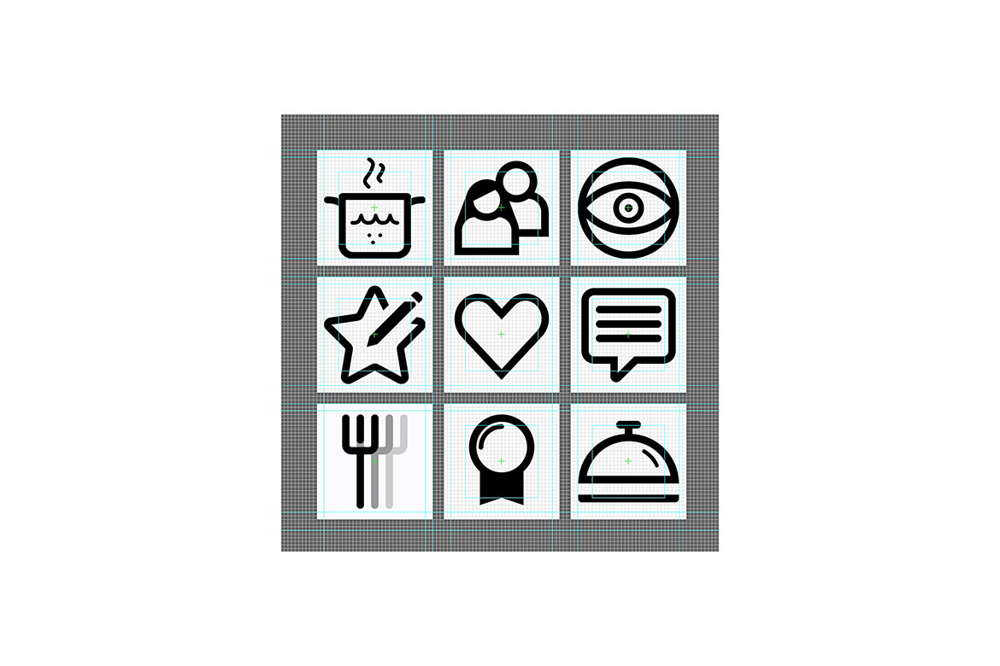

<div class="row">
  <div class="span12">
    <br>
    <h5>Imagine Git for Food</h5>

    <p class="work-def">Fork is an idea of a collaborative recipe repository based on the "Git" version control system, giving users the opportunity to create personal recipes and leaving them freely available for others to make their own versions of those recipes, surpassing or changing them completely. Based on an extensive social system that aims to provide the user with a powerful repertoire of functionalities to be able to create teams, compete for scores or create competitions, starting from an original idea and converting the original recipe into something completely different, making the existing database of dishes to be prepared grow "automatically".
    <br>
    <br>
    </p>
    <p class="advice">I strongly recommend downloading the full case study attached above as a PDF to fully understand the final result.</p>


  <p class="work-def sep">Icon grid</p>
  <div class="sep"></div>

  <div class="sep"></div>

  <p class="work-def sep">Pen and paper main user flow</p>
  <div ></div>

  <p class="work-def sep">Recipe steps screen</p>
  <div class="sep"></div>

</div>
</div>
